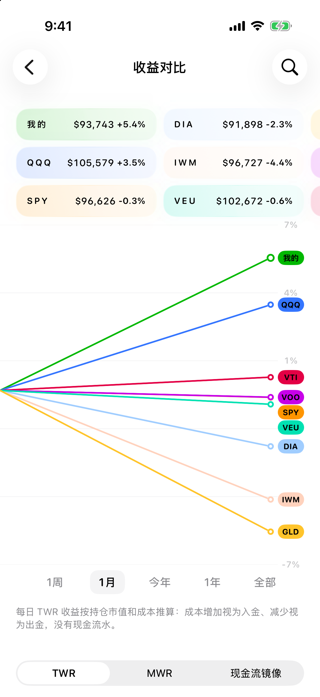
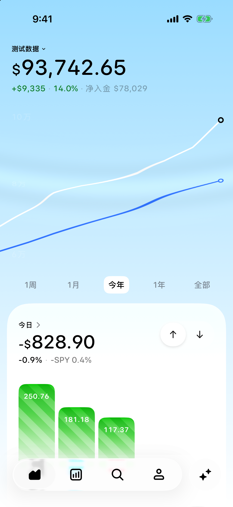

双指区间测量
长按并加入第二指，移动端点查看区间涨跌。
细节与数据说明
- 长按曲线，保持第一指，再加入第二指
- 移动两个端点，查看起止日期与区间变化
- 组合曲线与收益对比支持区间查看
截图为原生区间选中状态，使用演示数据；不同图表的金额与收益口径不同。


按类别浏览，点击截图查看原生界面。
长按并加入第二指，移动端点查看区间涨跌。
截图为原生区间选中状态，使用演示数据；不同图表的金额与收益口径不同。
用面积与颜色查看持仓分布，展开后按收益或行业查看。
截图为演示持仓的收起状态；在 App 内点按可展开。
拆分主要盈利持仓的历史贡献，复盘收益来源。
按当前股数回推历史市值，不包含已卖出持仓；截图为演示组合，不是完整历史交易归因。
用 RRG 比较六个市场指数相对标普 500 的强弱与动量。
StockCharts 周线快照；最新周点可能尚未收盘，数据日期见界面。
查看 11 个美国行业板块的相对位置、周度轨迹与历史回放。
采用板块相对强弱与动量方法，不是 JdK RRG。更新延迟时沿用最近可用快照，数据日期可在 App 内查看。
写下投资想法，检查筛选规则、执行步骤与模拟结果。
截图为新版草稿入口。当前以可识别的美元美股日线为主，只读分析与模拟，不自动下单，也不是历史回测。
查看公开申报中的内部人士买卖，区分主动交易与计划交易。
来源为 Nasdaq / SEC Form 4。过滤依赖披露标签及规则识别，可能不完整。
按业务或地区拆分收入，并比较历年占比。
截图为 ORCL 2025 财年业务构成，来自 FMP 本地年度快照；与最新三表报告期可能不同。
将历史目标价、评级与同期股价对照。
使用本地月度快照，覆盖依公司而定；目标价代表分析师观点，不是收益承诺。
沿曲线拖动，查看某一天的日期与数值。
截图为原生单日选中状态，使用演示组合。
通过 SnapTrade 个人 API 或其他支持的方式添加账户，统一查看持仓、市值与收益。
截图为演示账户。SnapTrade 连接需自备个人 API 凭证并完成只读授权；可连接的券商与数据范围取决于 SnapTrade 和对应券商。
汇总资产、净入金与持仓收益，查看历史曲线和个股变化。
新版原生界面，使用完全虚构的演示组合。
查看今日盈亏，按行业和持仓拆分贡献，给组合做一次 X-Ray。
截图为演示组合的今日详情。按当前持仓与最近报价推算，未计入今日买卖影响；用于辅助判断，不是买卖信号。
穿透受支持 ETF 的底层持仓，识别与直接持股的重叠。
截图为穿透后的热力图。覆盖取决于基金快照，部分使用指数代理。
用 TWR、MWR 或现金流镜像，与市场基准比较收益。
演示组合的 TWR 对比界面；可切换 MWR 和现金流镜像，数据口径随选择变化。
在价格曲线上查看买卖标记、成本线、持仓盈亏与汇率影响。
演示持仓的买卖标记与成本线；报价、历史曲线和持仓快照可能来自不同时间。
查看成交密集区、POC 与 52 周价格位置，辅助判断支撑和压力。
截图为个股页成交量区块；成交分布、52 周数据与报价可能有不同的更新时点。
按执行价与到期范围查看看涨、看跌期权的未平仓量。
ORCL 期权链快照。限支持的美国美元股票 / ETF；OI 不代表成交量或必然支撑阻力。
按年度或季度查看利润表、资产负债表和现金流量表。
截图为 App 读取的 ORCL 财报页，使用 SEC / Nasdaq 来源；报告期及覆盖依来源而定。
查看市场指数、VIX、美债收益率及行业表现。
最近可用行情快照，非盘中实时全市场榜单。
整理持仓的变化、支持与反对证据，以及待跟进的风险。
新版独立关注页，使用演示组合；证据尚未核实的内容显示低置信度提示。
用预设或自然语言设置财务筛选条件，逐项核对匹配依据。
截图展示条件入口。运行结果取决于数据服务权限和覆盖。
结合 VXSMH 波动率和 SMH 成交量观察半导体板块。
目前为半导体专项，使用导入快照；不是所有行业的实时情绪服务。
连接自己的 AI，围绕组合提问。Catfolio 不收接入费，第三方费用另计。
截图为演示分析。本地模型需设备支持；远程服务可能按其订阅或用量收费，并接收相关问题与分析上下文。
从个股曲线打开行情与公司动态简报，并核对来源。
本次截图为未获取到解读内容的重试状态。生成依赖可用 AI 服务和来源，不保证每次都有结果。
按账户和年份整理交易、分红、利息及资金进出，支持 CSV 导出。
基金费用估算不是实际扣款流水，不应从净值收益中重复扣除。
逐笔查看交易数量、价格、金额与已实现盈亏。
截图为演示交易；本地 FIFO 估算不能直接作为报税结果。
汇总已到账股息与逐笔派息记录；预测结果需以实际公告为准。
配图展示历史股息记录，非预测界面。预测是估算，实际派息以公司公告及到账记录为准。
按日期和账户汇总已入账利息。
截图为演示流水。统计已导入的利息，不按当前余额预测利息。
按当前基金市值与年费率估算年度持有成本。
截图为演示持仓。年度估算不是实际扣款流水，不应从基金净值收益中重复扣除。
从公开披露研究投资者持仓，使用独立模拟账户查看。
截图为人物选择页。模拟基于有时滞的披露，并非真实账户收益或自动跟单。
选择中文或英文、外观与触控反馈，管理本地账本。
截图为语言、外观、公司名称和显示货币设置。个人账本及券商凭据不通过偏好同步。
选择九种显示货币，加载组合时自动更新可用汇率并换算估值。
使用最近可用收盘汇率，不是实时外汇报价。显示换算不执行实际换汇；历史快照保留原汇率。
提取财报电话会中的承诺，对照后续结果与原文证据核查兑现情况。
截图为原生功能入口，尚未生成分析报告。适用于符合条件的美股公司；需 iOS 26、可用的 Apple Intelligence 与 FMP 资料权限。用户发起分析、按需更新，证据不足时保留待验证。
在同一只股票中选择全部、单个或多个账户，对比股数、成本与盈亏。
截图为虚构演示组合中仅选中全球账户的状态。账户选择用于汇总与筛选查看，不会合并券商账户或转移资产。
截图使用演示组合；部分英文页面配图仍为中文界面。研究数据的日期见截图。
结合收益、财报与持仓分布，理解 TWR、现金流、回撤和分散投资。
在 iPhone 主屏幕关注投资表现。
持仓、成本与收益在 iPhone 上计算，CSV 在本机解析。
凭据存入系统 Keychain，授权由你管理。不提供下单、撤单或转账功能。
券商、行情和汇率来自相应服务；远程 AI 接收相关问题与分析上下文。个人账本和券商凭据不参与偏好 iCloud 同步。
以下功能尚未开放，时间待定。
估算税务结果，探索卖出亏损持仓的影响。
从照片识别持仓与交易数据。
不需要。App 独立运行，可在手机上连接支持的券商或导入 CSV。
最低支持 iOS 18。部分本地 AI 功能需要 iOS 26 和支持 Apple Intelligence 的设备。
下载入口尚未开放，App Store 或 TestFlight 链接将在这里提供。